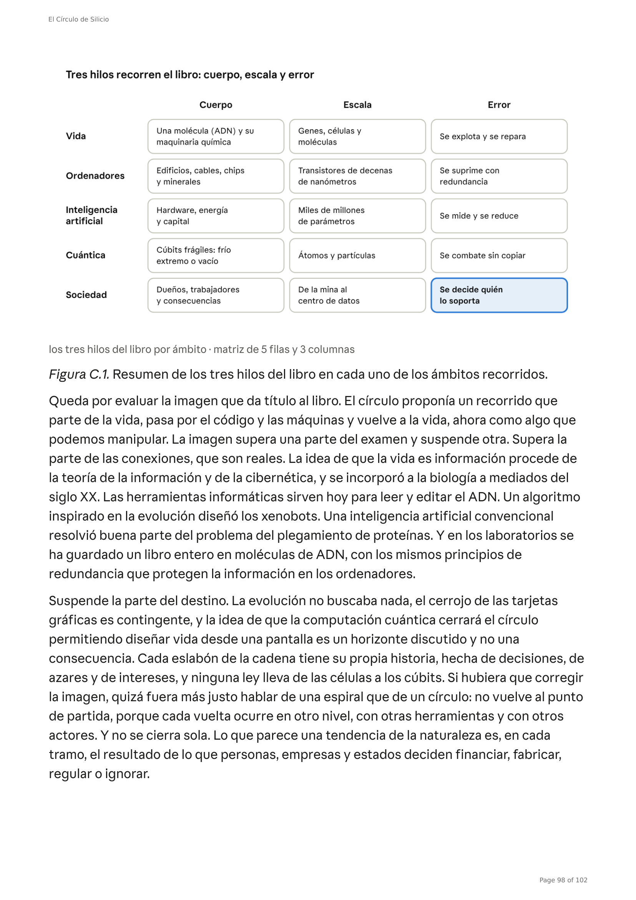

Conclusión. El círculo como metáfora, el cuerpo como hecho
El libro empezó con un gesto, el de sacar el teléfono y esperar que aparezca algo, y con una paradoja: la tecnología más material que ha construido la humanidad está hecha para no parecerlo. Para explicarla se propuso una tesis, la de que la información necesita un cuerpo, y tres hilos para seguirla por territorios muy distintos: el cuerpo, la escala y el error. Conviene ahora recoger lo recorrido y preguntar qué queda en pie.
En la vida, que fue el primer territorio, la información tiene un cuerpo, que es una molécula, una maquinaria química y un gasto de energía, y el error es a la vez la materia prima y la amenaza: el ADN se copia con una fidelidad asombrosa, pero no perfecta, y de lo que falla sale la variación sobre la que actúa la evolución. En los ordenadores, el cuerpo es una cadena de edificios, cables, fábricas y minerales, y el error se suprime con capas de regeneración, de redundancia y de trabajo humano que casi nadie ve. En la inteligencia artificial, el cuerpo es una industria de hardware y de capital, y el error se convierte en la magnitud que se mide y se reduce. En el lenguaje con el que hablamos de todo esto, se vio cómo las palabras ocultan cuerpos y personas. En la computación cuántica, el cuerpo es tan frágil que exige frío extremo o vacío casi perfecto, y el error es el problema central. Y en la sociedad, el cuerpo tiene dueños, trabajadores y consecuencias, y la elección de qué error se tolera, y de quién lo soporta, es una decisión política y no técnica.
los tres hilos del libro por ámbito · matriz de 5 filas y 3 columnas
Figura C.1. Resumen de los tres hilos del libro en cada uno de los ámbitos recorridos.
Queda por evaluar la imagen que da título al libro. El círculo proponía un recorrido que parte de la vida, pasa por el código y las máquinas y vuelve a la vida, ahora como algo que podemos manipular. La imagen supera una parte del examen y suspende otra. Supera la parte de las conexiones, que son reales. La idea de que la vida es información procede de la teoría de la información y de la cibernética, y se incorporó a la biología a mediados del siglo XX. Las herramientas informáticas sirven hoy para leer y editar el ADN. Un algoritmo inspirado en la evolución diseñó los xenobots. Una inteligencia artificial convencional resolvió buena parte del problema del plegamiento de proteínas. Y en los laboratorios se ha guardado un libro entero en moléculas de ADN, con los mismos principios de redundancia que protegen la información en los ordenadores.
Suspende la parte del destino. La evolución no buscaba nada, el cerrojo de las tarjetas gráficas es contingente, y la idea de que la computación cuántica cerrará el círculo permitiendo diseñar vida desde una pantalla es un horizonte discutido y no una consecuencia. Cada eslabón de la cadena tiene su propia historia, hecha de decisiones, de azares y de intereses, y ninguna ley lleva de las células a los cúbits. Si hubiera que corregir la imagen, quizá fuera más justo hablar de una espiral que de un círculo: no vuelve al punto de partida, porque cada vuelta ocurre en otro nivel, con otras herramientas y con otros actores. Y no se cierra sola. Lo que parece una tendencia de la naturaleza es, en cada tramo, el resultado de lo que personas, empresas y estados deciden financiar, fabricar, regular o ignorar.
Conviene también decir lo que este libro no ha hecho. No ha pretendido predecir el futuro, y los capítulos sobre inteligencia artificial y computación cuántica envejecerán antes que los demás, porque las cifras de inversión, de mercado y de capacidad cambian cada pocos meses. Está escrito desde la curiosidad y no desde la especialidad, y con la ayuda de una inteligencia artificial que puede equivocarse en los detalles, como se advirtió en la nota de autoría. Por eso se ha procurado que cada afirmación importante se pueda contrastar con una fuente, y se invita a quien lo lea a hacerlo, sobre todo en lo más reciente. Y no ha pretendido ser una obra de sociología, aunque haya tomado de ella herramientas, y sus conclusiones en ese terreno deben leerse como preguntas abiertas.
Lo que sí ofrece es una manera de mirar, que se resume en tres preguntas que se pueden hacer ante cualquier tecnología. La primera es qué cuerpo tiene: qué materia, qué energía y qué trabajo hay detrás. La segunda es quién lo mantiene y quién lo paga. Y la tercera es qué error admite y quién lo soporta cuando ocurre. Ninguna de las tres cambia lo que hace un teléfono o un asistente de inteligencia artificial, pero las tres cambian lo que se sabe sobre aquello que se usa, y por tanto lo que se puede preguntar, exigir y decidir.
Cuando el lector vuelva a sacar el teléfono y deslice el dedo, la respuesta aparecerá igual de rápido y sin ruido. Pero quizá sepa que detrás hay un edificio con filas de máquinas, un cable en el fondo del mar, una fábrica que dibuja con luz transistores más pequeños que un virus, personas que etiquetan y que reparan, y un error que alguien, en algún lugar, ha decidido tolerar. Y a lo mejor, con eso, el gesto de siempre ya no resulte tan mágico, aunque sí algo más extraordinario.
Glosario
ADN: molécula que guarda la información genética de los seres vivos, escrita con
cuatro bases químicas (A, C, G y T) en una doble hélice.
Algoritmo: secuencia finita de instrucciones sin ambigüedad para resolver un
problema. En el uso público, suele designar sistemas completos con datos, objetivos y
decisiones humanas.
Aminoácido: pieza química con la que se construyen las proteínas.
Aprendizaje automático: conjunto de técnicas por las que un sistema ajusta sus
parámetros a partir de ejemplos para equivocarse menos, en lugar de seguir reglas
escritas una a una.
Atención (mecanismo de): operación central del Transformer, que calcula para cada
elemento de un texto cuáles de los demás son relevantes para interpretarlo.
Bit: unidad mínima de información, con dos valores posibles, que por convención se
llaman 0 y 1.
Byte: grupo de ocho bits, que permite distinguir 256 combinaciones.Caja negra: sistema que se usa sin conocer su funcionamiento interno. En sociología de la tecnología, designa lo que el éxito de una técnica deja cerrado y fuera de discusión. Centro de datos: instalación industrial que alberga servidores, con suministro eléctrico, refrigeración y conexiones de red. Chip: pieza de material semiconductor, normalmente silicio, que contiene un circuito integrado con muchos transistores. Código de superficie: esquema de corrección de errores cuánticos que organiza los cúbits en una cuadrícula y los vigila con comprobaciones continuas. Cosificación: proceso por el que los productos de la acción humana se perciben como si fueran hechos naturales, independientes de quienes los crearon. CPU y GPU: la unidad central de procesamiento ejecuta tareas variadas una tras otra con gran rapidez. La unidad de procesamiento gráfico hace a la vez muchísimas operaciones sencillas y es la base del hardware de la inteligencia artificial actual. Criptografía poscuántica: algoritmos de cifrado que se ejecutan en ordenadores convencionales y que se cree que resisten también a los ordenadores cuánticos. CUDA: plataforma de software de NVIDIA que permite programar sus tarjetas gráficas para tareas generales, y base del ecosistema que ha sostenido su posición en el mercado. Cúbit: unidad de información cuántica, un sistema físico con dos estados de referencia que puede estar en una combinación de ambos. Cúbit lógico: cúbit fiable formado por la combinación de muchos cúbits físicos mediante corrección de errores. Decoherencia: pérdida de las propiedades cuánticas de un cúbit por su interacción con el entorno. Descenso por gradiente: método de entrenamiento que corrige los parámetros de un modelo, paso a paso, en la dirección en que más disminuye el error. Día Q: momento, de fecha desconocida, en que un ordenador cuántico podría romper el cifrado de clave pública actual. Efecto cerrojo: situación en la que el coste de cambiar de tecnología es tan alto, por el ecosistema que se ha formado a su alrededor, que se mantiene aunque haya alternativas. Entrelazamiento: correlación entre cúbits que impide describir cada uno por separado y que no permite enviar mensajes más rápido que la luz. Función de pérdida: cifra que mide cuánto se equivoca un modelo y que el entrenamiento trata de reducir. Hardware: parte física de un sistema informático.
Interferencia: fenómeno por el que las ondas se suman o se anulan, base de los algoritmos cuánticos. Ley de Moore: observación de que el número de componentes por chip se duplicaba a un ritmo regular, formulada en 1965 y revisada en 1975, que funcionó como expectativa de la industria. Litografía ultravioleta extrema (EUV): técnica de fabricación de chips que usa luz de muy corta longitud de onda, y que hoy produce una sola empresa, ASML. Mutación: cambio en el ADN, que es la fuente de la variación sobre la que actúa la evolución. Nanómetro: mil millonésima parte de un metro. En los chips, los números de las generaciones son nombres comerciales y no medidas de los transistores. NISQ: “cuántico ruidoso de escala intermedia”, etapa de ordenadores cuánticos de decenas a cientos de cúbits sin corrección de errores completa. Oblea: disco muy fino de silicio de altísima pureza sobre el que se fabrican los chips. Pesos abiertos: modelos de inteligencia artificial cuyos parámetros se publican, aunque normalmente no se publiquen los datos de entrenamiento ni todo el proceso. Peso (o parámetro): número que determina la influencia de una conexión en una red neuronal y que se ajusta durante el entrenamiento. Programa almacenado: idea de que las instrucciones de una máquina se guardan en su memoria igual que los datos, lo que permite cambiar su comportamiento sin recablearla. Puerta lógica: circuito que combina uno o varios bits para producir otro según una regla sencilla. Red neuronal: estructura matemática de capas de unidades conectadas, con pesos que se ajustan mediante entrenamiento. Redundancia: información añadida para detectar y corregir errores, como las dos cadenas del ADN o los bits de control de una memoria. Refrigerador de dilución: máquina que enfría los chips superconductores a centésimas de grado por encima del cero absoluto. Retropropagación: método eficiente de calcular cuánto contribuye cada peso al error de una red neuronal. Sobreajuste: fallo de un modelo que memoriza sus ejemplos de entrenamiento y rinde mal con ejemplos nuevos. Software: conjunto de instrucciones que le dicen al hardware qué hacer. Superposición: propiedad por la que un cúbit puede estar en una combinación de sus dos estados de referencia hasta que se mide.
Transformer: arquitectura de redes neuronales presentada en 2017, que mira todo un texto a la vez y permite repartir el entrenamiento entre muchos procesadores. Transistor: interruptor sin partes móviles que controla el paso de una corriente con una señal eléctrica, componente básico de los procesadores. Xenobot: agrupación de células de rana, diseñada con un algoritmo evolutivo y de tamaño inferior al milímetro, que puede moverse y empujar partículas.
